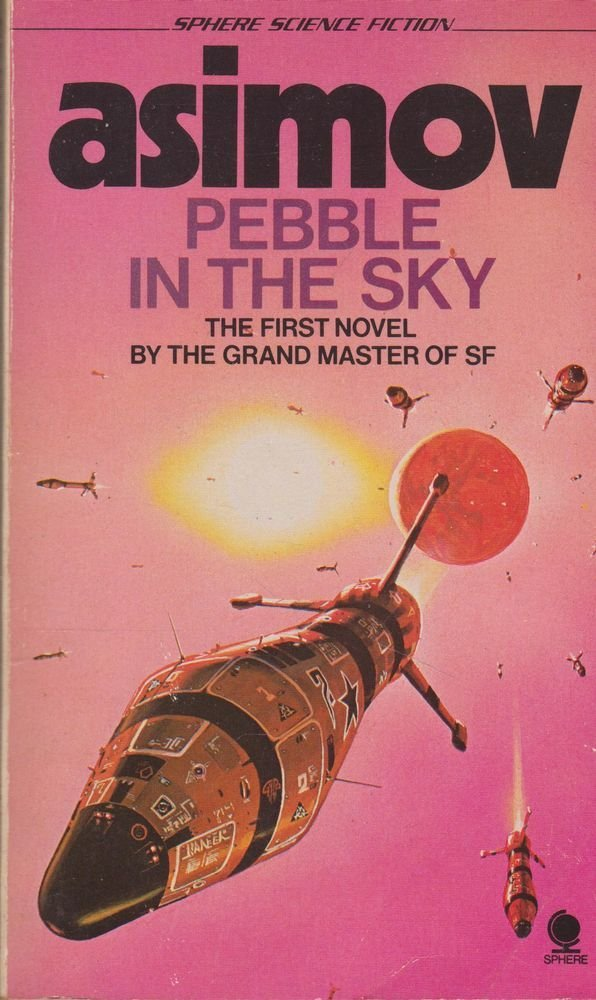

Pebble in the Sky (1950)
Synopsis
Pebble in the Sky is the first novel by celebrated, multi-award winning science fiction Grand Master Isaac Asimov. Full of wonders and ideas, this is the book that launched the novels of the Galactic Empire, culminating in the Foundation books and novels. It is also one of that select group of SF adventures that since the early 1950s has hooked generations of teenagers on reading science fiction. This is Golden Age SF at its finest. One moment Joseph Schwartz is a happily retired tailor in 1949 Chicago. The next he's a helpless stranger on Earth during the heyday of the first Galactic Empire. Earth, he soon learns, is a backwater, just a pebble in the sky, despised by all the other 200 million planets of the Empire because its people dare to claim it's the original home of man. And Earth is poor, with great areas of radioactivity ruining much of its soil―so poor that everyone is sentenced to death at the age of sixty. Joseph Schwartz is sixty-two...
Download PDF- 1 - Between One Footstep And The Next
- 2 - The Disposal Of A Stranger
- 3 - One World - Or Many?
- 4 - The Royal Road
- 5 - The Involuntary Volunteer
- 6 - Apprehension In The Night
- 7 - Conversation With Madmen?
- 8 - Convergence At Chica
- 9 - Conflict At Chica
- 10 - Interpretation Of Events
- 11 - The Mind That Changed
- 12 - The Mind That Killed
- 13 - Spider Web At Washeen
- 14 - Second Meeting
- 15 - The Odds That Vanished
- 16 - Choose Your Side!
- 17 - Change Your Side!
- 18 - Duel!
- 19 - The Deadline That Approached
- 20 - The Deadline That Was Reached
- 21 - The Deadline That Passed
- 22 - The Best Is Yet To Be